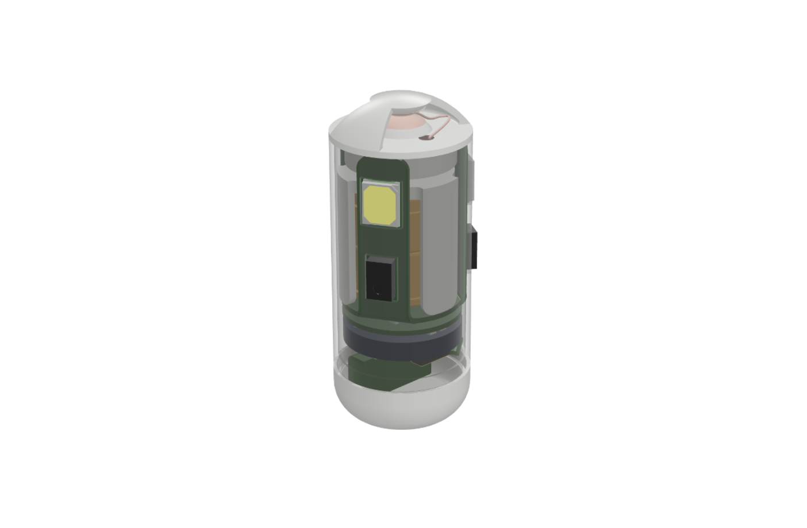
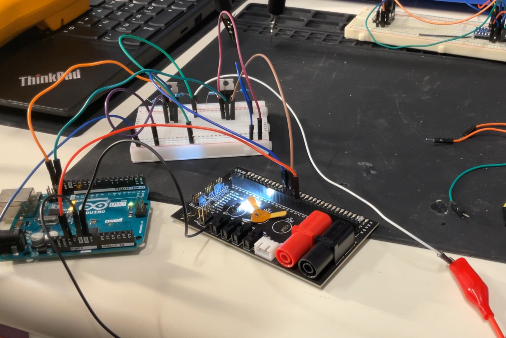
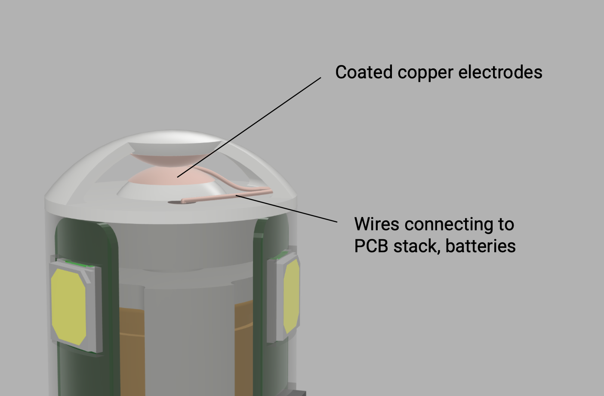
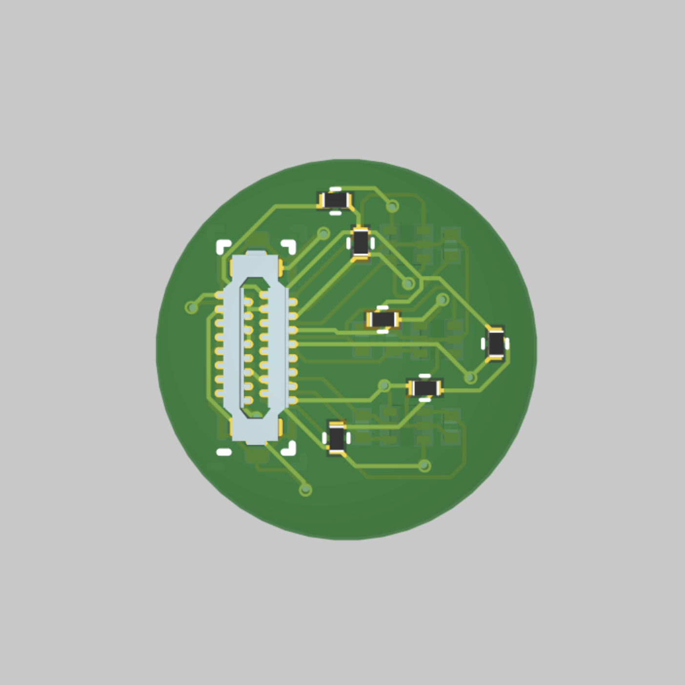

Lab for Translational Engineering, 2024–2025
FIREFLI is an ingestible, pill-sized device designed to activate in the small intestine and diagnose mesenteric ischemia. When I joined the project, baseline sensing and MCU circuitry had been established, however the system faced critical challenges. The MCU PCB was unable to communicate with the sensor PCB due to unreliable I²C lines, and no passive trigger mechanism existed to ensure the device powered on only in the small intestine. Reliable electronics and a targeted power switch were essential both for conserving battery life over the full intestinal transit time and for ensuring diagnostic accuracy.
To address these issues, I first debugged the electronics system with an oscilloscope and logic analyzer, identifying a logic-level mismatch (2.1 V output vs. 1.8 V required) as the root cause of failed communication. I designed an intermediate level-shifting PCB using Altium Designer to slot between the sensing and MCU boards, which restored full function. In parallel, I developed a passive, pH-activated trigger by coating copper electrodes with Eudragit L100-55, a polymer that dissolves only in neutral intestinal fluid. This mechanism prevented premature activation in the stomach while reliably powering the device in the small intestine. With these solutions, I assembled four test devices that completed nine successful in vivo trials. Using pilot trial data, I also wrote algorithms to average healthy versus ischemic signals and set diagnostic thresholds, achieving 90% diagnostic accuracy with 98% sensitivity and 85% specificity. In addition to the engineering and experimental work, I contributed significantly to the dissemination of this research. I constructed the methods section of a manuscript describing FIREFLI’s design, validation, and in vivo testing. The manuscript was accepted by Science Robotics and will be published in Fall 2025.



Citation:
Chen, J.†, Alexiev, A.†, Sergnese, A.†, et al.,
Traverso, G.*
"An Ingestible Capsule for Luminance-Based Diagnosis of Mesenteric Ischemia."
Science Robotics, 2025.
†equal contribution; *corresponding author